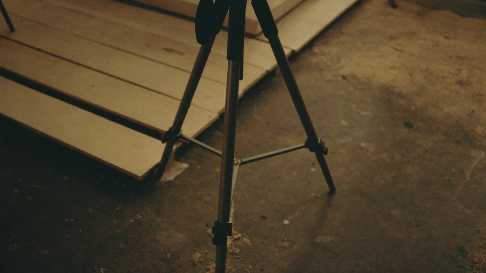

Fallstudie
Ein Projekt aus der Suchmaschinenoptimierung, über ein Jahr dokumentiert. Eine Social-Media-Referenz können wir noch nicht zeigen, deshalb der Probemonat.
Social Media für lokale Betriebe
Wir produzieren einen Monat lang Ihre Inhalte, Sie sehen am Ergebnis, ob es für Sie passt. Ohne Rechnung, ohne Kündigungsfrist, ohne automatische Verlängerung.
Nach dem Monat entscheiden Sie. Sagen Sie nichts, passiert nichts: Es gibt keine stillschweigende Verlängerung und keine Rechnung für den Probemonat.
Schnitt, Untertitel, Grafik.
Aus Rohaufnahmen werden Videos, die in den ersten zwei Sekunden halten. Geschnitten auf den Ton, mit Untertiteln, die ohne Ton funktionieren.
Jetzt drehen 02Ein Plan statt Zufall.
Profiltext, Titelbilder, Aufteilung des Feeds und ein Plan, wann was erscheint. Damit nicht nach drei Wochen wieder Funkstille ist.
Jetzt betreuen 03Einen halben Tag, dann steht der Monat.
Wir kommen in den Betrieb und drehen das Material für mehrere Wochen am Stück. Ohne Studio, ohne Team, ohne dass Ihr Tag stillsteht.
Jetzt filmenWer auch über Google gefunden werden will, bekommt das bei uns aus einer Hand.
Ein Projekt aus der Suchmaschinenoptimierung, über ein Jahr dokumentiert. Eine Social-Media-Referenz können wir noch nicht zeigen, deshalb der Probemonat.
Ein halber Tag bei Ihnen, der Rest passiert bei uns.

Wir kommen in Ihren Betrieb und filmen einen halben Tag: Sie bei der Arbeit, Ihre Räume, Ihre Leute, ein paar Sätze in die Kamera. Daraus entsteht das Material für mehrere Wochen. Kein Studio, kein Team, kein Stillstand im Tagesgeschäft.
Jedes Reel wird auf den Ton geschnitten, bekommt Untertitel und dort, wo es hilft, Bewegtgrafik. Untertitel sind kein Zusatz: Der größte Teil wird ohne Ton angesehen, und ohne Text ist das Video dann stumm.
Sie bekommen die fertigen Dateien plus einen Plan, wann was erscheint. Auf Wunsch stellen wir selbst ein. Eine Korrekturschleife je Reel ist drin, bevor etwas online geht.
Kurzvideos werden Menschen gezeigt, die Ihnen nicht folgen. Ein Betrieb mit zweihundert Followern kann ein Video mit zwanzigtausend Aufrufen haben. Bei Fotos passiert das nicht.
Handwerk, Praxis, Gastronomie: Wer sich vorher ein Gesicht und eine Arbeitsweise ansehen konnte, ruft eher an und feilscht weniger.
Die Plattformen spielen Inhalte bevorzugt in der Umgebung aus. Für einen Betrieb mit festem Einzugsgebiet ist das genau die Reichweite, die zählt.
Der Grund, warum die meisten aufhören, ist nicht fehlende Idee, sondern der Schnitt. Genau den übernehmen wir, und genau deshalb hört es nach drei Wochen nicht auf.
Aus einem halben Drehtag entstehen zehn bis fünfzehn Videos. Die Rechnung geht auf, weil Sie Ihren Betrieb einmal zeigen und nicht fünfzehn Mal.
Anzeigen wirken, solange Sie zahlen. Ein Reel, das läuft, läuft weiter, und bleibt im Profil stehen, wo es auch in einem Jahr noch angesehen wird.
Dieselben Aufnahmen tragen auch Website, Google-Profil und Angebote. Ein Dreh zahlt auf mehrere Kanäle ein.
Aufrufe, gespeicherte Videos und Profilaufrufe stehen in den Statistiken des Kontos, das Ihnen gehört. Sie müssen uns nichts glauben.
Die fünf Ursachen, die in den meisten Fällen dahinterstecken.
Lesen →Welche Felder zählen und welcher Fehler am meisten Sichtbarkeit kostet.
Lesen →Die drei üblichen Abrechnungsmodelle und woran Sie unseriöse Angebote erkennen.
Lesen →Kontor produziert Social-Media-Inhalte für Betriebe, die ihre Arbeit zeigen können: Handwerk, Praxen, Gastronomie, Studios, Dienstleistung mit festem Einzugsgebiet. Der Schwerpunkt liegt auf Kurzvideos, also Reels und Shorts, weil diese Formate auch Menschen erreichen, die dem Profil nicht folgen. Genau das unterscheidet sie von Fotobeiträgen, deren Reichweite an der Zahl der Follower hängt.
Der Ablauf ist bewusst einfach gehalten. Wir drehen einen halben Tag in Ihrem Betrieb, schneiden daraus zehn bis fünfzehn Videos und liefern dazu einen Plan, wann was erscheint. Was wir an Schnitt, Untertiteln und Bewegtgrafik machen, steht unter Reels und Shorts, was zur laufenden Betreuung des Profils gehört, unter Profilbetreuung.
Der häufigste Grund, warum Betriebe mit Social Media aufhören, ist nicht die fehlende Idee, sondern der Schnitt: Er dauert länger als gedacht und bleibt im Tagesgeschäft liegen. Deshalb liegt dieser Teil bei uns, und deshalb ist der Dreh vor Ort auf einen halben Tag begrenzt. Wer einmal vier Wochen durchgehalten hat, hat die Hürde hinter sich.
Suchmaschinenoptimierung bleibt Teil des Angebots, für Betriebe, die zusätzlich über Google gefunden werden wollen. Technik, Seitenstruktur und lokale Sichtbarkeit stehen unter SEO, die Bestandsaufnahme davor unter SEO Audit. Ein über ein Jahr dokumentiertes Projekt steht in den Referenzen, die Fragen, die am Telefon am häufigsten kommen, im Blog.
10 bis 15 geschnittene Reels und die Profilbetreuung. Danach entscheiden Sie, ohne Frist und ohne automatische Verlängerung.